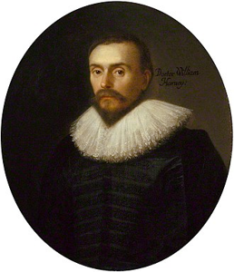

William Harvey
William Harvey (1 de abril de 1578 - 3 de junio de 1657) fue un médico inglés a quien se le atribuye describir correctamente, por primera vez, la circulación y las propiedades de la sangre al ser distribuida por todo el cuerpo a través del bombeo del corazón. Este descubrimiento confirmó las ideas de René Descartes, que en su libro Descripción del cuerpo humano había dicho que las arterias y las venas eran tubos que transportan nutrientes alrededor del cuerpo.
Así mismo, en 1651 mencionó por primera vez el concepto de ovocito mediante la sentencia latina «ex ovo omnia» (Todo procede de un huevo). No lo observó como tal, pero fue el primero en sugerir que los seres humanos y otros mamíferos albergan una especie de “huevo” que contiene al individuo sucesor; teoría criticada por la comunidad científica del momento.
Fue el primer médico conocido en describir completamente, y en detalle, la circulación sistémica y las propiedades de la sangre bombeada al cerebro y al resto del cuerpo por el corazón, aunque escritores anteriores, como Realdo Colombo, Michael Servetus, y Jacques Dubois, habían proporcionado precursores de la teoría.
Nuevo modelo circulatorio
Es probable que para sus descubrimientos acerca de la circulación de la sangre Harvey se haya inspirado en las obras de René Descartes y Miguel Servet, y quizás también en la medicina musulmana antigua, especialmente en la obra de Ibn Nafis, quien realizó trabajos sobre las arterias en el siglo XIII. Sin perjuicio de ello, lo cierto es que la principal influencia para el desarrollo de sus avances fueron los autores y profesores de la Escuela de Padua: Hyeronimus Mercurialis (1530-1606), traductor de Hipócrates; Mateo Realdo Colombo (1516-1559); Gabriel Falopio (1523-1562); Andreas Vesalio (1514-1574), creador de la anatomía moderna, y principalmente su maestro directo; Hyeronimus Fabricius (1533-1619), quien había descubierto ciertos pliegues membranosos en el interior de la venas, a los que llamó «válvulas», y que describió en su libro De venarum ostiolis (Sobre las válvulas venosas, 1603). Fabricius introdujo a Harvey en la fisiología desde la visión moderna del movimiento desarrollado en Padua durante el siglo xvi, así como a la investigación embriológica y del desarrollo del feto, temas también abordados en la obra de Harvey.
Aparte de su experiencia en Padua, influyó en Harvey para el posterior desarrollo de sus ideas su labor en el Colegio de Médicos de Londres, donde se le encomendó hacerse cargo de las Lumleian Lectures, desde 1616 hasta 1656. Dos lecciones semanales durante el año y una disección o anatomía pública al año eran las tareas a desempeñar. En 1616 escribe sus Praelectiones Anatomicae (Lecciones previas de anatomía), con las que preparaba sus clases.
Harvey desarrolló sus estudios sobre la circulación de la sangre en 1616, publicando sus resultados en 1628, en su libro Exercitatio Anatomica de Motu Cordis et Sanguinis in Animalibus (Un estudio anatómico sobre los movimientos del corazón y la sangre de los animales)( escrito en latín), donde utilizando el método científico argumentó su hipótesis de que la sangre era bombeada alrededor del cuerpo por el corazón en el sistema circulatorio. Esta hipótesis se basaba en la observación (observaciones anatómicas) y experimentación (vivisección).
El descubrimiento de Harvey destruyó el antiguo modelo de Claudio Galeno que identificaba la sangre venosa (de color rojo oscuro) y la arterial (más fluida y brillante), cada una con una función diferente. La sangre venosa era producida en el hígado y la arterial en el corazón. Estas sangres se dispersaron por el cuerpo y eran consumidas por él. Harvey determinó que el hígado necesitaría producir 540 libras (unos 250 litros) de sangre por hora para que el cuerpo funcionara; algo exagerado, por lo que concluyó que la sangre se va reciclando.